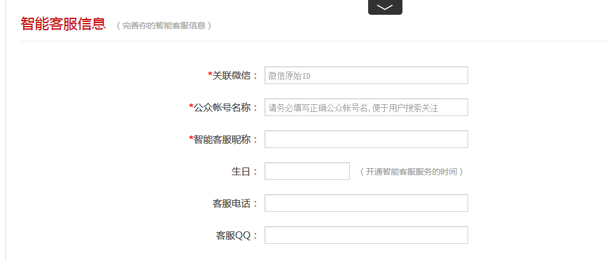
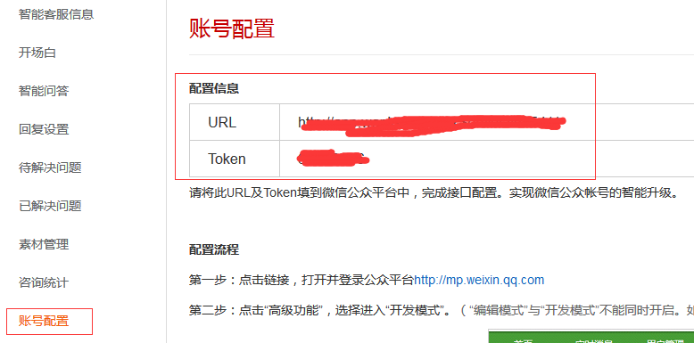
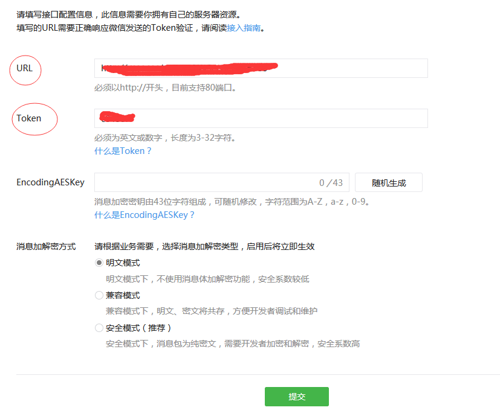

1、智能客服信息设置
在T-Linx商户智能云服务平台打开微信接入应用，选择【智能客服信息】进入，如下图所示：

设置包括关联微信的原始ID（必填项）、公众账号名称（必填项）、智能客服昵称（必填项）、生日（开通智能客服服务的时间）、客服QQ（格式例如：0755-88888888或4006001612。）
登录微信公众平台后，进入【公众号设置】，可找到以上相关信息。
2、账号配置
进入【帐号配置】，复制红框内的URL及Token，如下图所示：

登录微信公众平台，选择【开发者中心】并启用“服务器配置”，将复制的URL及Token填到微信公众平台中，填写后提交即可完成接口配置，实现微信公众帐号的智能升级，如下图所示：

完成以上2项之后，关联账户即完成。